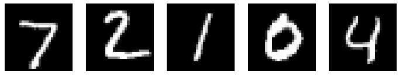

Hi, Today we will design a tool that recognises your handwritten digit. It will use a deep neural network to decipher the digit you have written (between 0 -9). We use two different DNN (Deep Neural Network) architectures and test both of them on this task, one would have series of Dense layers whereas the other would be CNN (Convolutional Neural Network).
Step 1: Getting the data
We will use MNIST dataset to train our model. The MNIST database of handwritten digits has a training set of 60,000 examples, and a test set of 10,000 examples. The digits have been size-normalized and centered in a fixed-size image. The images are greyscale and 28 by 28 pixels in size.These images are scanned handwriting samples from 250 people, half of whom were US Census Bureau employees, and half of whom were high school students. The test dataset is made up of digits written by a different set of 250 people than the original training data (albeit still a group split between Census Bureau employees and high school students). This helps give us confidence that our system can recognize digits from people whose writing it didn't see during training (The model is trained on the training data and the evaluated on the test data).
The images in the dataset look like this:

We will use keras to implement the model and to load,preprocess the data. We use keras because it is a simple (and fast!) to use library which allows us to develop deep learning models without having to implement everything on our own. If you are really just starting out, implementing some of the basic things that keras automatically takes care of, like backtracking and gradient computation, can be helpful in understand how the neural networks actually work. Refer to this notebook to learn how to do these things on your own (without relying on a library).
We can load the dataset directly from keras, since keras includes a few dataset by default and MNIST happens to be a part of it.
(x_train, y_train), (x_test, y_test) = keras.datasets.mnist.load_data();
Step 2: Visualizing the data
Its always a good idea to look at and understand our data.print(x_train.shape)
print(x_train[0].shape)
print(x_train[0])
This shows that our training data has 60000 images of 28*28 pixel values, with pixel values ranging from 0-255. Lets print one of the images.
from matplotlib import pyplot
pyplot.imshow(x_train[0], cmap=pyplot.get_cmap('gray'))
#cmap indicates color map (scheme).
pyplot.show()
Our image data is in a greyscale format, this means that
each pixel value actually denotes the intensity of that pixel, i.e. how dark that pixel is - ranging from 0 (completely white) to 255 (pitch dark). Other format that images take are RGB and RGBA (A for alpha channel - which indicates the opacity of a pixel). For the latter two formats, the shapes would be (height, width, 3) and (height, width, 4) respectively.
Step 3: Defining the model
We will set up two different models. One that uses a dense layer after flattening the 28*28 image, whereas the other would use CNN.Lets implement the first model.
inputs = keras.Input(shape = (28,28))
x = keras.layers.Rescaling(1.0 / 255) (inputs) #This is used to change the range of inputs. When we rescale our input (which is in range [0,255]) by 1/255, our inputs get translated to range [0,1].
x = keras.layers.Flatten()(x) #This flattens the input, which means that it converts our 28 * 28 matrix image into a 784 linear array image.
x = keras.layers.Dense( 128, activation = "relu" )(x) #relu ouputs the original input value if it is positive, otherwise it outputs zero
x = keras.layers.Dense( 128, activation = "relu" )(x)
outputs = keras.layers.Dense(10, activation = "softmax")(x) #10 output because we are categorizing the handwritten digits in 0-9.
model = keras.Model(inputs, outputs)
model.summary()
None as the first value in the input shape indicates that the model can take in any number (batch-size) of inputs (with 28 * 28 dimension)
Lets implement the second model. The second model uses CNN (Convolutional Neural Network) architecture. Convolutional models perform better than traditional dense models on image data. This is because CNN models are translation-invariant (more specifically, the Convolutional layer is translation equivariant) - which means that no matter where an object lies in an image, the model would still be able to detect the object. So, if a person writes a '7' in top right of our 28*28 image, the model would still be able to predict that 7 even if it was only trained on images of '7' where it was written in bottom left of the image.
model_cnn = keras.Sequential(
[
keras.Input(shape = (28,28,1)),
layers.Conv2D(32, kernel_size=(3,3), activation="relu"),
layers.MaxPooling2D(pool_size = (2,2)),
layers.Conv2D(64, kernel_size = (3,3), activation="relu"),
layers.MaxPooling2D(pool_size=(2,2)),
layers.Flatten(),
layers.Dropout(0.5),
layers.Dense(10, activation = "softmax") #Since output can be between 0-9, we have 10 as number of output nodes in Dense layer
]
)
model_cnn.summary()
Okay, let's understand what is happening here. About Conv2d layer
The output shape of the Conv2d layer is (None, 26,26,32) which means that it can output any number of (None) tensors (or you can say matrices) of size 26 x 26 x 32. This is because in our Conv2d layer in the sequential model_cnn, we defined the number of filters as 32 and the kernel size as (3,3). The kernel works on our input matrix row by row and column by column. The output size of a matrix that we would by applying a kernel of (3,3) size on an input of size (28,28) and no padding and a stride (gap between two subsequent kernel operation on our input matrix along the row or column) of size 1 is: (28 - 3 + 1) x (28 - 3 + 1) = 26 x 26. This comes from the formula for getting the output size:Oh = (Ih - Kh + Pr + Sr) / Sr
Where Oh = Height of output matrix
Ih = Height of input matrix
Kh = Height of Kernel
Pr = Padding along row (put value as 1 if we pad by 1 on both sides of our matrix)
Sr = Stride along row
Now, each filter works on all the (last) dimensions of our input and sums up the value that it gets by applying the kernel on each individual (last) dimension of the input to give us an output of a single dimension. This means that if we have an RGB image of size 180 x 180, which means that the shape of the RGB image is (180, 180, 3), then a single filter would apply kernel operations on each of the (last) dimension - that is each channel of the input and then sum them up to give us a single channel output. Hence having 32 filters gives us an output of size 26 x 26 x 32. I hope this explanation was clear! (If it wasnt, please contact me and I will get back to you and improve this post).
About Max Pooling layer
Max pooling layer applies a pooling kernel which output a single value corresponding to the size of the kernel. This layer also support strides and padding. The idea behind using a pooling layer is to provide translational invariance to our CNN model. The Convolutional layer detects certain features from the image (Could be a specific shape/border/edge) - now when we use a max pooling on top of it, we activate/look for the highest values - i.e. the presenence of activations from the Conv layer (presence of features) - neglecting the other information/noise that we do not care about (by ignoring the remain 3 values in the case we use a 2x2 pooling kernel size). This also helps us reduce the dimension of the input to the next layer and speed up further computations!To understand the output size of the Max Pooling layer, just apply the same formula written above; since a pooling operation is similar to convolution operation - with only difference being that we take the maximum from the kernel size instead of multiplying each element and summing them. Note that, the stride here is 2 - since not specifying a stride size in the Max Pooling layer makes the size of stride equal to size of pooling kernel. Therefore, Output size : (26 - 2 + 2) / 2 x (26 - 2 + 2) / 2 = 13 x 13. Here we take 26 since the input to Max Pooling layer is 26 - which is the output from the first Convolutional layer.
About Dropout Layer
The Dropout layer is used to regularize Deep Learning models. We need regularization because these models tend to overfit quite easily. Other ways of regularizing is L1 and L2 regularizer which add an extra term in the cost function to penalize absolute value of weight and the square of weight respectively (These methods do not work as effectively as drop out due to co-adaptation). Passing a value of .5 in the parameter to Dropout layer drops the value of input to 0 randomnly with a frequency of .5. The values that are not dropped gets increased to 2 to make sure that the sum over all inputs are unchanged. By doing this, the gradient of regularized network becomes equal to the expectation of gradient of a dropout layer (with multiplied input values) which means that minimising the dropout loss is equivalent to minimising a regularized network.Dropout layers only work during the training phase and are deactivated automatically during the inferencing (when making predictions) phase by Keras.
Step 4: Training the model
This is the last step before we would be able to make predictions.model.compile(optimizer = 'adam', loss='sparse_categorical_crossentropy', metrics = [ keras.metrics.SparseCategoricalAccuracy(name="acc")] )
batch_size = 64
#Now we will try to fit the data on our model - this will train the model and tune the weights
history = model.fit(x_train, y_train, batch_size = batch_size, epochs = 1)
print(history.history)
loss, acc = model.evaluate(x_test, y_test);
Here we use Adam as an optimizer since Adam is a better optimizer than sgd since different learning rate is maintained for different weights,which is unlike sgd where all the weights (both at front of network and at end) have the same learning rate
The loss we use is sparse_categorical_crossentropy which computes the cross entropy between label and predictions. Labels are expected to be provided as integers. If you have one-hot encoded labels, you have to use categorical_crossentropy loss.
Also, some other metric that we can use include: SparseTopKCategoricalAccuracy, SparseCategoricalCrossEntropy which shows how often our targets are in top K prediction and the cross entropy between predicted and true value respectively.
Our Dense layer based model achieves an accuracy of 95% on the test set. Lets train the CNN based model now and see its performance.
#Hyperparameters - can be tuned manually or with KerasTuner
batch_size = 32
epochs = 3
model_cnn.compile(loss = "sparse_categorical_crossentropy", optimizer="adam", metrics=["accuracy"])
model_cnn.fit(x_train, y_train, batch_size = batch_size, epochs = epochs, validation_split = 0.1)
model_cnn.evaluate(x_test, y_test)
Here, both batch_size and epochs are hyperparameters that can be tuned using KerasTuner - which rotates the values of these hyperparameters between a set of values or a range of values (with a step value provided as parameter) and saves the values that achieves the objective provided to it (can be getting the least loss or achieving the best accuracy or something else).
Step 5: Making predictions with our model
Yay! We have finally reached the most exciting part of our journey. We can ask our model to predict unseen images of handwritten digits.pyplot.imshow(x_test[1], cmap=pyplot.get_cmap('gray'))
pyplot.show()
prediction = model.predict(np.expand_dims(x_test[1],0))
print(np.argmax(prediction), " is predicted with a ", round(prediction[0][np.argmax(prediction)] * 100,2), "% certainity")
prediction_cnn = model_cnn.predict(np.expand_dims(x_test[1],0))
print(np.argmax(prediction_cnn), " is predicted with a ", round(prediction_cnn[0][np.argmax(prediction_cnn)] * 100,2), "% certainity with the CNN model")
The reason we are passing the image to be predicted inside a np.expand_dims() function is that our model expects inputs with the shape (None, 28, 28) whereas the shape of our image is (28,28). Using np.expand_dims we can insert a new axis at the axis position 0 (that we passed as the second parameter). This is equivalent to using x_test[1][np.newaxis, :]